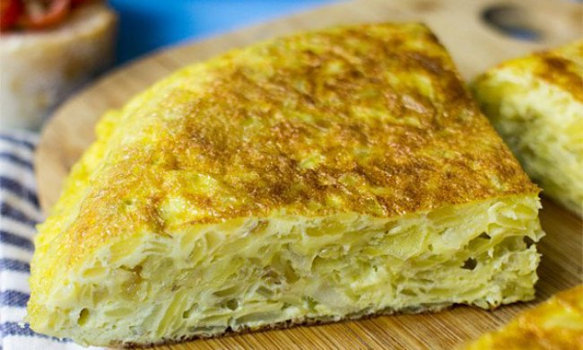
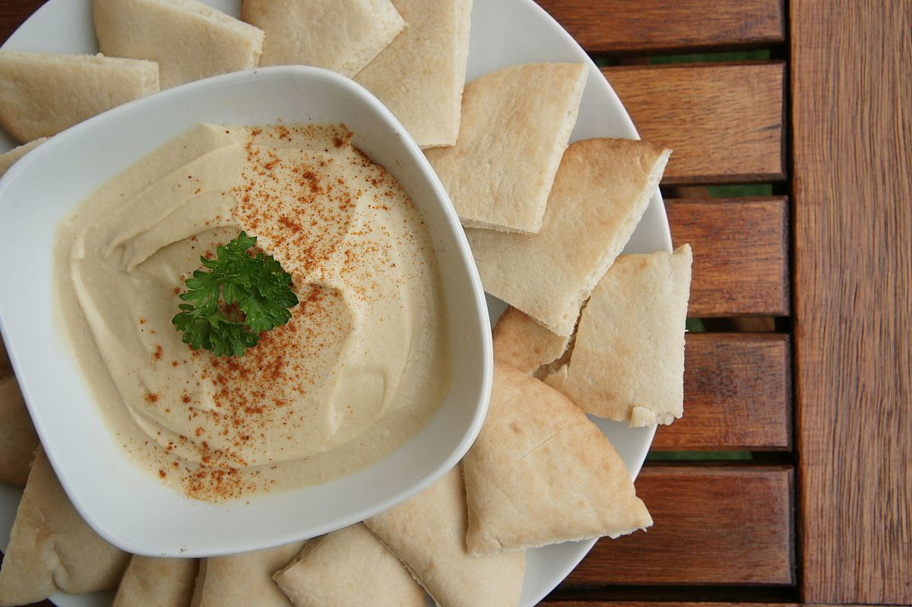

Tortilla de papa casera y vegana
Acá encontraras la receta mas sencilla para hacer una tortilla de papa totalmente casera y vegana!!!
Ver receta


Acá encontraras la receta mas sencilla para hacer una tortilla de papa totalmente casera y vegana!!!
Ver receta